set.seed(42)
data(housing, package = "randomForestSRC")
o <- varpro(SalePrice ~ ., data = housing, ntree = 100)
plot(gg_varpro(o, nvar = 20)) + theme_hv_manuscript()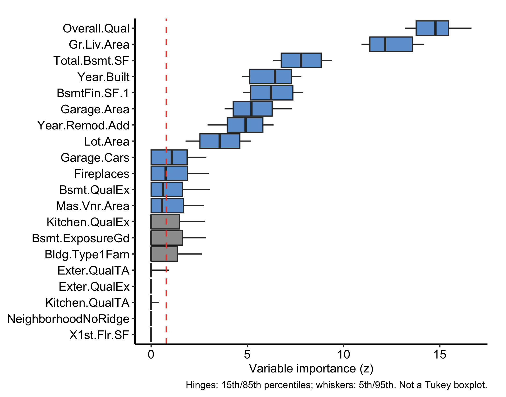
Permutation importance (the VIMP chapter) answers “how much does the forest lean on this variable?” by breaking the variable and watching error rise. varPro (Lu et al. 2026) asks a different question: “how much do the forest’s own splitting rules depend on this variable?” Rather than permuting predictors, it scores each one by how much a tree’s release rules rely on it, and calls the result variable priority. Reach for it when you want a selection that comes with a built-in cutoff (so the method tells you which variables to keep, not just how to rank them), when you want the direction and magnitude of a local effect, or when you want to flag unusual observations the same forest can isolate.
So varPro sits alongside VIMP as a statement about the model, while SHAP speaks about a patient and dependence speaks about a predictor. The SHAP chapter lays those four views out side by side if you are deciding which one a figure needs.
ggRandomForests (Ehrlinger 2026) provides a family of gg_* extractors that pull these scores out of a fitted varpro object and render them as tidy ggplot2 graphics. This chapter works through the main extractors on a regression fit and a classification fit. As elsewhere, each plot() hands back a bare ggplot you finish with a house theme.
The extractors read from a fitted varpro object, so the input is whatever varpro() itself needs: a formula and a data frame. The outcome type decides the family, and that matters here because several of the extractors are family-specific. We start with a regression fit on the housing data shipped with randomForestSRC (Ishwaran and Kogalur 2026): 2,930 homes and 80 predictors, modelling sale price (SalePrice). This is the same kind of dataset the random-forest chapters use, and the extra width is the point: variable priority earns its keep when there are far more candidates than you can eyeball.
set.seed(42)
data(housing, package = "randomForestSRC")
o <- varpro(SalePrice ~ ., data = housing, ntree = 100)
plot(gg_varpro(o, nvar = 20)) + theme_hv_manuscript()
gg_varpro() returns an honest 15/85 boxplot for each variable. With 80 predictors we pass nvar = 20 to show the top-ranked; the box spans the importance values obtained when the variable is released across the rule ensemble, and the dashed reference line at the cutoff (default 0.79 of the top score on the local-standardized scale) separates selected from unselected variables. Variables whose boxes sit to the right of the cutoff are retained.
The plot in Figure 32.1 is the core figure. Two variants make it more informative. Setting faithful = TRUE shows the per-tree importance draws as jittered points behind the boxplot, exposing the spread that the summary hides:
plot(gg_varpro(o, faithful = TRUE, nvar = 20)) + theme_hv_manuscript()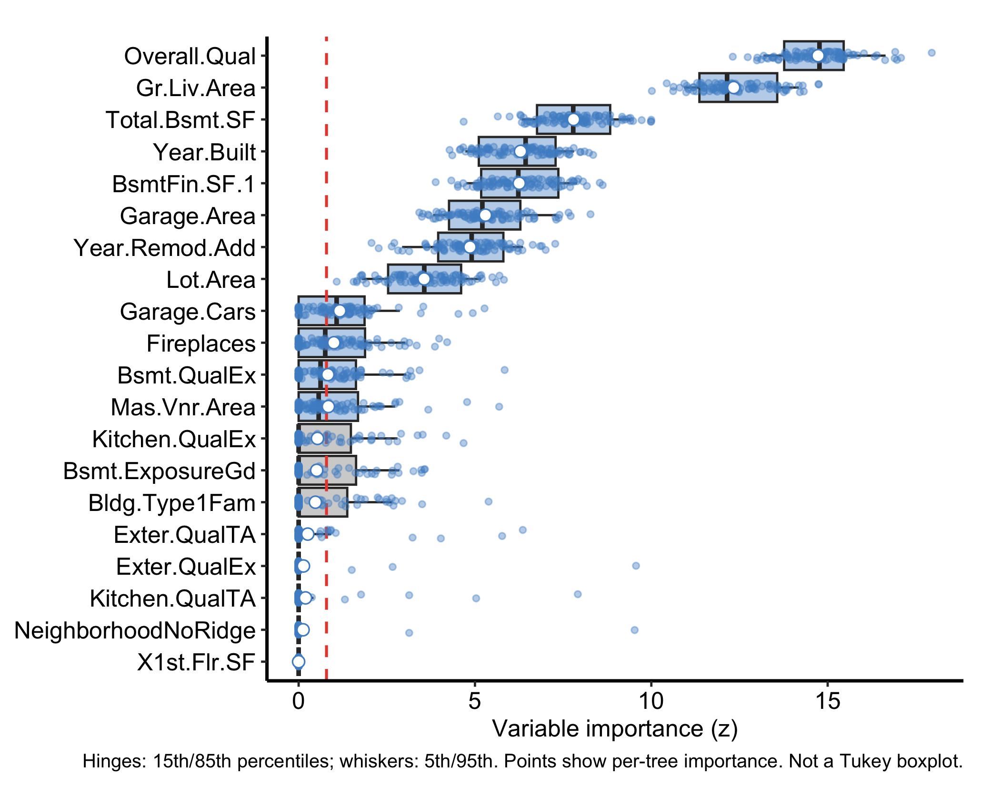
Setting nvar lower restricts the display further, handy when a wide problem like this one would otherwise crowd the panel and you only want the leaders:
plot(gg_varpro(o, nvar = 8)) + theme_hv_manuscript()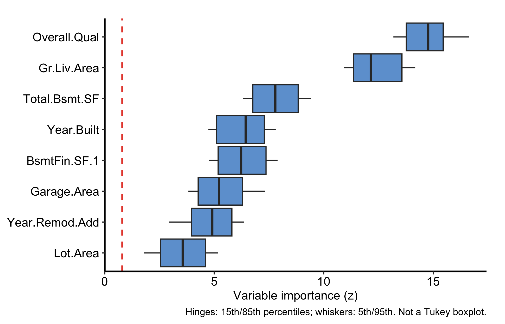
The 15/85 boxplot is the figure to learn to read, and the cutoff line is what makes it a selection rather than just a ranking.
cutoff argument when you want to be stricter or looser.faithful = TRUE to see the raw draws behind the summary.gg_beta_varpro() is regression-only. Within each release region it fits a lasso and reports the refined slope (β) coefficients instead of a VIMP-style importance, so you get not just whether a variable matters but the direction and magnitude of its local linear effect.
plot(gg_beta_varpro(o)) + theme_hv_manuscript()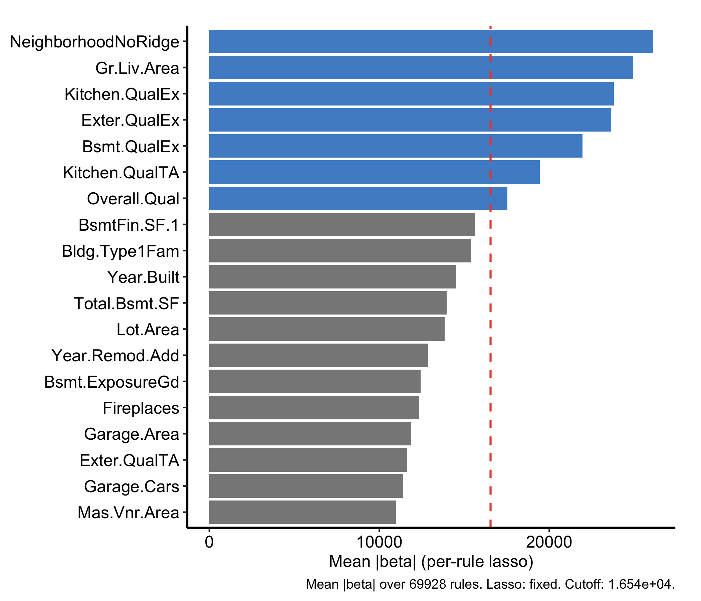
The per-rule lasso refinement (beta.varpro) is the expensive step; under Quarto’s freeze the result is cached after the first render. Because these are lasso-refined β coefficients rather than importance scores, they can be negative.
gg_beta_uvarpro() is the same idea for a fit with no outcome at all. varPro::uvarpro() grows the forest without a response (the unsupervised section later in this chapter has the full treatment), and the lasso inside each region asks how well the other variables explain the released one. Average those absolute coefficients and you get one importance per variable, on the same lasso scale but answering a question about the design rather than about SalePrice. We fit it on the numeric housing predictors and reuse that fit for the dependency graph in Figure 32.10.
set.seed(42)
num_cols <- names(housing)[vapply(housing, is.numeric, logical(1))]
uv <- uvarpro(housing[, setdiff(num_cols, "SalePrice")], ntree = 100)
plot(gg_beta_uvarpro(uv)) + theme_hv_manuscript()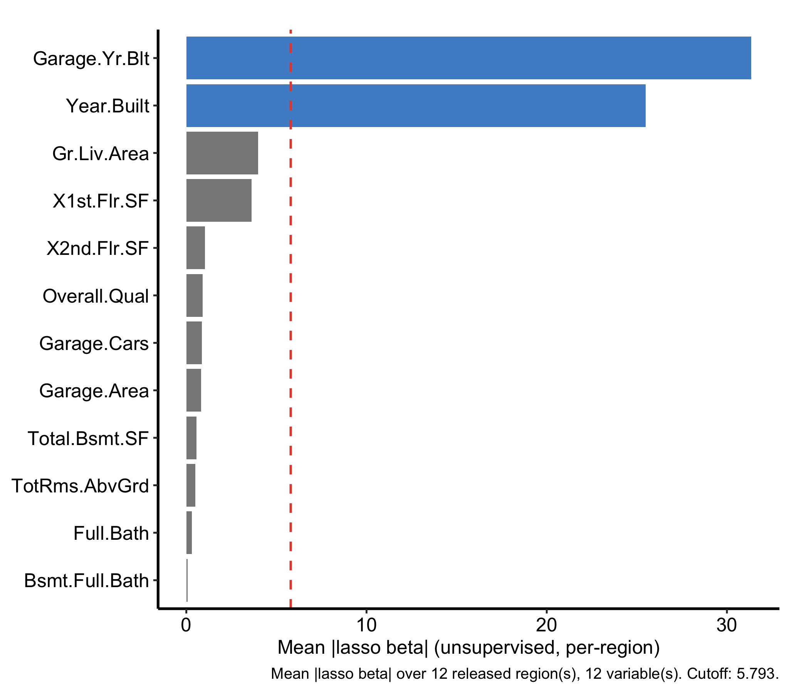
The two are told apart by the object you hand them. gg_beta_varpro() needs a regression varpro fit and reports a slope on the outcome; gg_beta_uvarpro() needs a uvarpro fit and reports how much the rest of the design explains each variable. Bars at or above the dashed cutoff are flagged as selected, and that cutoff sits at mean(beta_mean) unless you set cutoff yourself.
gg_ivarpro() computes individual (observation-level) variable priority, decomposing the forest importance down to each case. On a regression fit with weak per-observation signal the decomposition can collapse to nothing (it returns zero rows), so we demonstrate it on a classification forest, which also lets us show the which_class argument. We fit status ~ . on the breast data (also from randomForestSRC): 198 patients, 32 predictors, and a two-level recurrence outcome (N = no recurrence, R = recurrence).
set.seed(42)
data(breast, package = "randomForestSRC")
oc <- varpro(status ~ ., data = breast, ntree = 100)
plot(gg_ivarpro(oc)) + theme_hv_manuscript()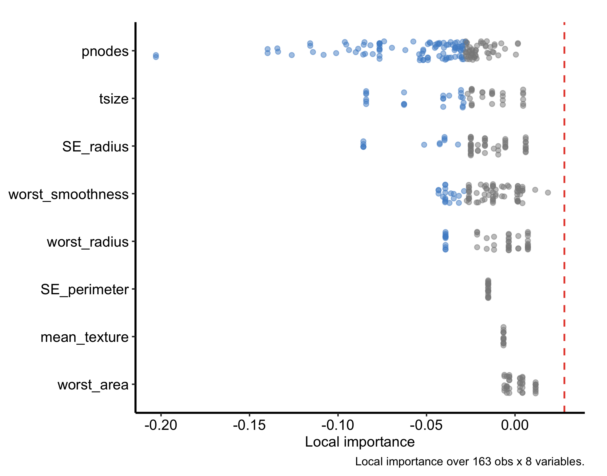
Each panel summarises how strongly individual observations rely on a given variable. You can focus on a single outcome level with which_class, here the recurrence class:
plot(gg_ivarpro(oc, which_class = "R")) + theme_hv_manuscript()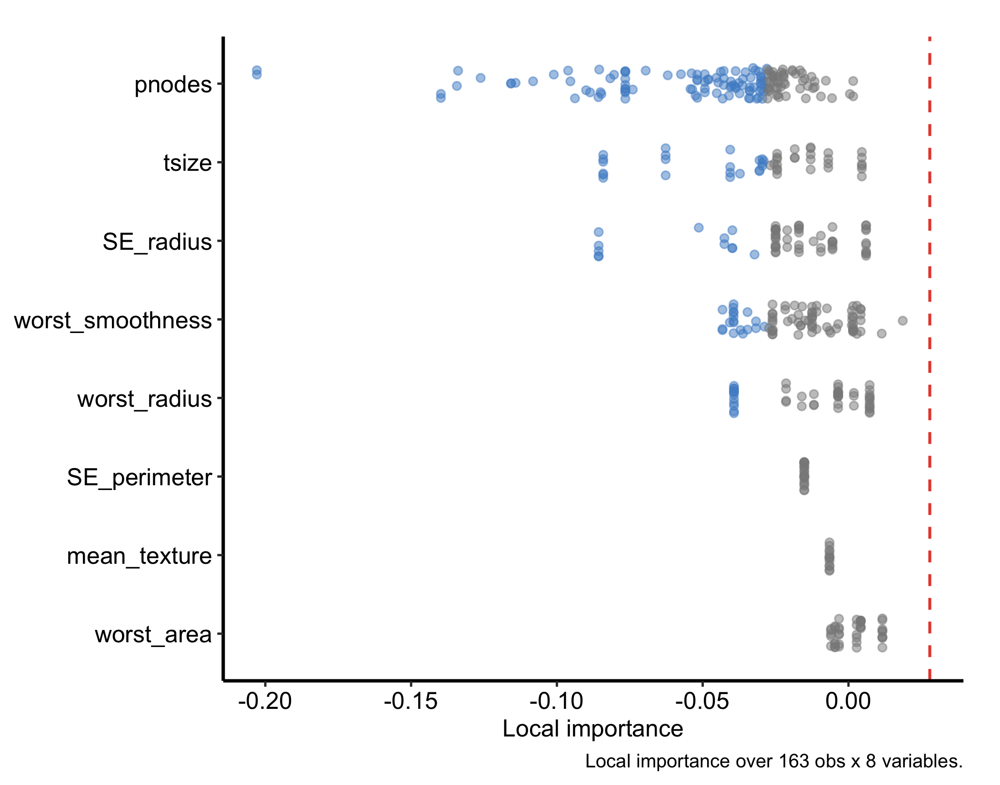
The classification fit also supports conditional = TRUE in gg_varpro(), which facets the priority bars by outcome class so you can read which predictors separate which classes. This option needs a classification forest; it errors on the regression fit.
plot(gg_varpro(oc, conditional = TRUE, nvar = 15)) + theme_hv_manuscript()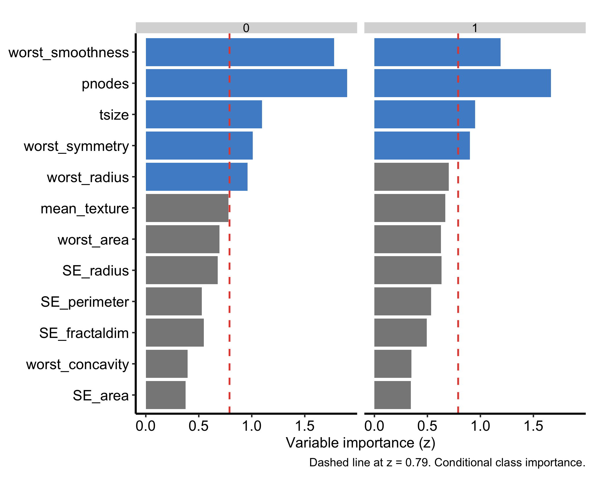
gg_isopro() visualises in-sample anomaly (isolation) scores. These come from an isopro object, and there is no .varpro method that builds one for you: you construct it first with varPro::isopro() on the fitted forest, then pass that to gg_isopro().
iso <- isopro(object = o, ntree = 100)
plot(gg_isopro(iso)) + theme_hv_manuscript()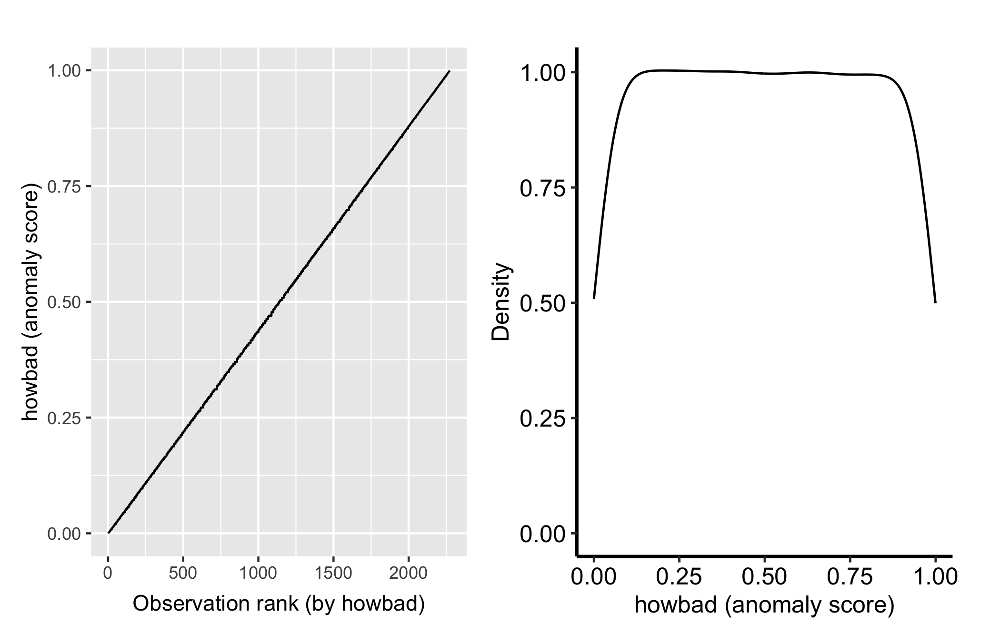
Higher isolation scores flag observations the forest separates with few splits, candidate outliers. Pass newdata to gg_isopro() to score held-out observations against the fitted isolation forest.
The extractors so far rank and refine variables; partial dependence asks how a selected variable moves the prediction. gg_partial_varpro() runs varPro::partialpro() on the fitted forest and draws a marginal-effect curve per variable, with a scale argument that sets the y-axis to suit the outcome family. Because that treatment spans regression, classification, and survival, it gets its own chapter; see varPro partial dependence. (gg_partialpro() is the superseded name for this extractor; it is now a thin alias for gg_partial_varpro(), so reach for the new name.)
The beta plot in Figure 32.5 was a first taste of an unsupervised fit. varPro::uvarpro() grows a forest with no response to predict, then scores how strongly each variable depends on the others. gg_udependent() reads those cross-variable scores and draws them as a dependency graph, where nodes are variables, edges the dependencies between them, so you can see which predictors travel together before any modelling. Reach for it when you want to understand the structure among the predictors themselves, for example to spot a cluster of collinear measurements.
plot(gg_udependent(uv)) + theme_hv_manuscript()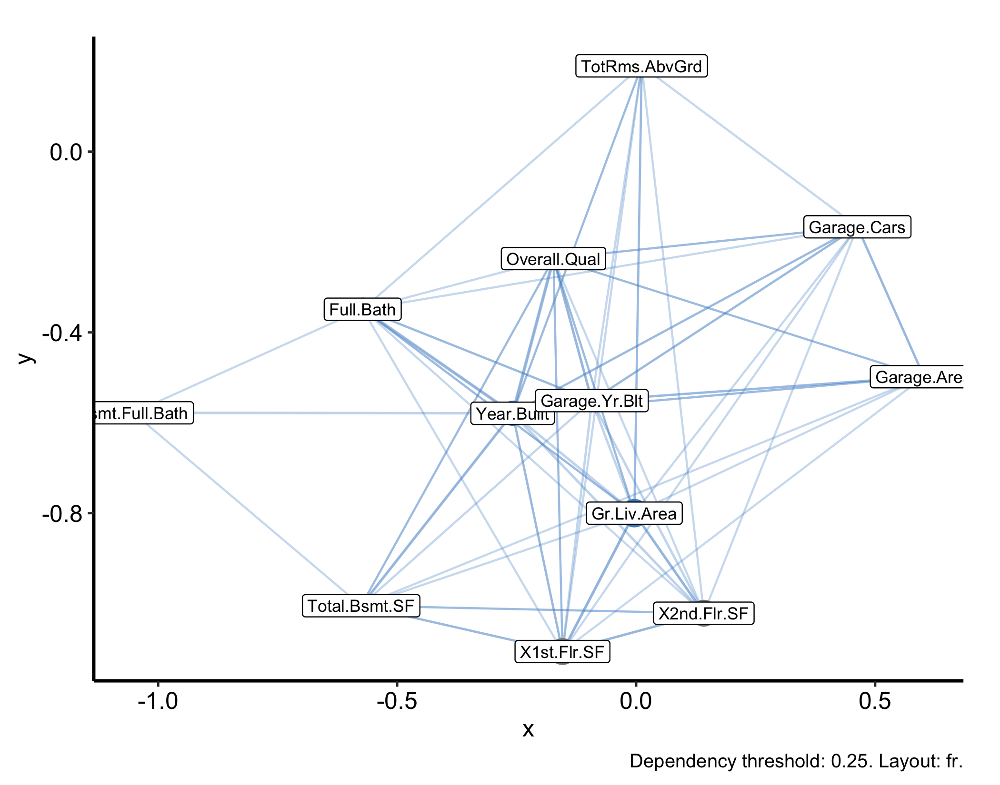
This is the same uv fit, built on the numeric housing predictors with the SalePrice outcome and the factor columns dropped, because the dependency graph comes from a numeric distance and cannot square a mixed-type design. A thick edge between two variables means the forest finds them strongly interdependent; an isolated node is a variable that carries information the others do not.
The graph shows you the structure; gg_sdependent() gives you the ranked table behind it. Both read the same lasso-coefficient matrix, but where gg_udependent() draws nodes and edges, gg_sdependent() returns one row per candidate variable carrying a signal score, that variable’s degree in the graph, and a flag for whether it landed in sdependent()’s detected signal set. Reach for it when you need to name the variables rather than point at a picture.
plot(gg_sdependent(uv)) + theme_hv_manuscript()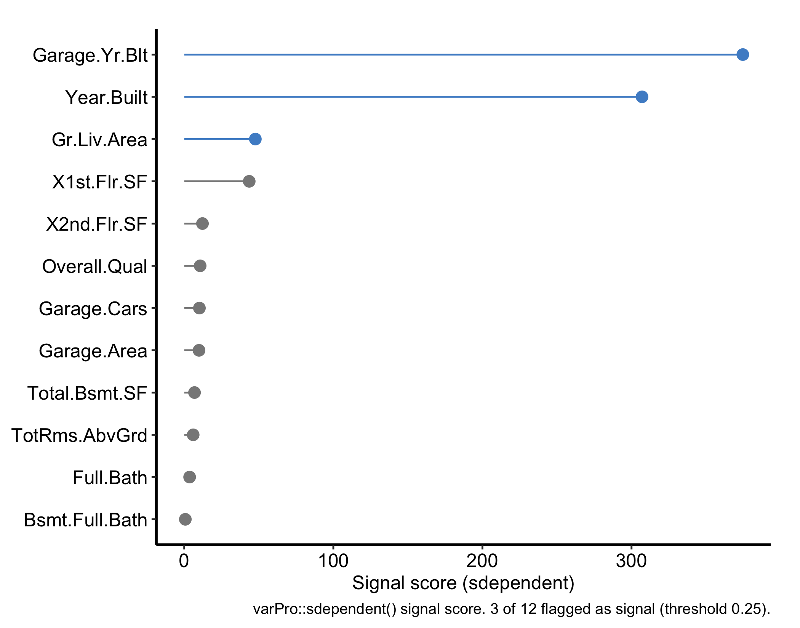
Both gg_udependent() and gg_sdependent() take a labels argument, the same named character vector used in the dependence chapter, so a graph built on raw column names can be relabelled for a manuscript without renaming anything in the data.
Highlighted variables are the detected signal set, and the caption reports how many of them cleared the threshold. Four arguments carry over from gg_udependent(): threshold, q.signal, directed, and min.degree. threshold (default 0.25) only builds the dependency graph, deciding which entries of the lasso-coefficient matrix count as an edge, so raising it shrinks the signal set solely by isolating nodes, which then get dropped before scoring ever runs. The argument that actually sizes the signal set is q.signal (default 0.75): a variable is flagged as signal when its degree in that graph clears min.degree (NULL by default, which falls back to 1 for a directed graph or 2 for an undirected one) and its score clears the q.signal quantile of every score in the fit. Raise q.signal for a shorter, more conservative list; lower it for a longer one. directed (default TRUE) keeps the two directions of a pair apart, because “j explains i” and “i explains j” are separate lasso coefficients and need not agree; set it FALSE when you only want to know that two variables are dependent, not which way the dependency reads. The degree column rides along in the returned data frame even though the plot does not draw it, so a variable with a middling score but a high degree is worth a second look.
gg_isopro() needs an isopro object first. There is no .varpro method, so calling gg_isopro() on the varpro object directly fails. Build iso <- isopro(object = o, ...) and then plot iso.gg_beta_varpro() is regression-only. The lasso β refinement is defined for a regression fit; do not expect it off a classification varpro object.conditional = TRUE needs a classification forest. gg_varpro(conditional = TRUE) facets priority by class, so it errors on a regression fit like the housing model. Use it on a classification fit such as the breast one.gg_ivarpro() needs real signal. Individual priority decomposes importance to each observation, and on a weak problem that decomposition can return zero rows and an empty plot. It works on a strong-signal fit like the breast classification forest, which is why the individual-priority examples use it.gg_udependent() needs all-numeric data. The unsupervised dependency graph is built from a numeric distance, so a mixed-type design (factors plus numerics, like the full housing frame) fails with “Adjacency matrices must be square.” Pass only the numeric columns, as the example does.nvar/nvars. With 80 predictors the bare gg_varpro() and gg_partial_varpro() displays are unreadable walls; cap them with nvar (the boxplot) and nvars (which variables partialpro even computes, the expensive step).o$xvar.names is not a list of columns you can subset with. A varpro fit reports the features its rules actually use, and it one-hot encodes every factor it keeps, so a Neighborhood column comes back as NeighborhoodNoRidge, NeighborhoodNridgHt, and NeighborhoodStoneBr. Hand those to housing[, ...] and you get an undefined-columns error, which is a confusing way to find out that the name you asked for was never a column. varpro_feature_names() maps them back.For the housing fit above, o$xvar.names runs 30 feature names against the 81-column frame we handed varpro(), 14 of them encoded level names, and varpro_feature_names() recovers the 26 original columns:
ncol(housing) # what you handed it[1] 81length(o$xvar.names) # what the fit reports[1] 30setdiff(o$xvar.names, names(housing)) # encoded level names [1] "MS.ZoningRM" "NeighborhoodNoRidge" "NeighborhoodNridgHt"
[4] "NeighborhoodStoneBr" "Bldg.Type1Fam" "Roof.MatlClyTile"
[7] "Exter.QualEx" "Exter.QualTA" "Bsmt.QualEx"
[10] "Bsmt.ExposureGd" "BsmtFin.Type.1GLQ" "Kitchen.QualEx"
[13] "Kitchen.QualTA" "Misc.FeatureElev" varpro_feature_names(o$xvar.names, housing) # mapped back to real columns [1] "PID" "Lot.Area" "Overall.Qual" "Year.Built"
[5] "Year.Remod.Add" "Mas.Vnr.Area" "BsmtFin.SF.1" "Total.Bsmt.SF"
[9] "X1st.Flr.SF" "X2nd.Flr.SF" "Gr.Liv.Area" "Full.Bath"
[13] "Fireplaces" "Garage.Yr.Blt" "Garage.Cars" "Garage.Area"
[17] "MS.Zoning" "Exter.Qual" "Bsmt.Qual" "Bsmt.Exposure"
[21] "Kitchen.Qual" "BsmtFin.Type.1" "Bldg.Type" "Misc.Feature"
[25] "Neighborhood" "Roof.Matl" That gap between what a fit reports and what your data frame actually holds is the same seam that runs through every extractor in this chapter: the score, the graph, and the ranked table all read straight from the fitted object, and varpro_feature_names() is the one step that translates its column names back into ones you can hand to housing[, ...].